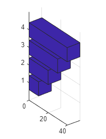
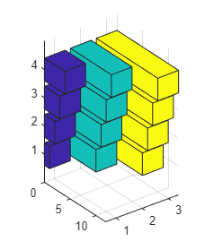
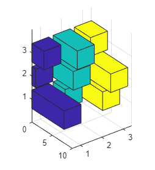
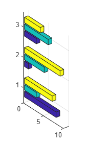
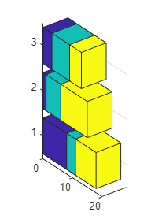

bar3h
Horizontal 3-D bar graph
Description
bar3h( creates a horizontal 3-D bar graph
for the elements of y)y. Each bar corresponds to an element in
y.
To plot a single series of bars, specify
yas a vector. For a vector of length m, the function plots the bars on a z-axis ranging from1to m.To plot multiple series of bars, specify
yas a matrix with one column for each series. For an m-by-n matrix, the function plots the bars on an x-axis ranging from1to n and a z-axis ranging from1to m.
bar3h(___, sets the width of
the bars along the x- and z-axes and controls the
separation of bars within a group. By default, width)width is
0.8 and the bars have a slight separation. If width
is 1, then the bars within a group do not have any space between them.
Specify width in addition to any of the input argument combinations in
previous syntaxes.
bar3h(___, specifies the
style of the bars, where style)style can be "detached",
"grouped", or "stacked". The default style is
"detached".
bar3h(___, displays all bars
using the color specified by color)color. For example, use
"r" to specify all red bars.
h = bar3h(___)Surface objects. If y is a vector, then
bar3h creates one Surface object. If
y is a matrix, then bar3h returns a
Surface object for each series. Use h to set
properties of the bars after displaying the bar graph. For a list of properties, see
Surface Properties.
Examples
Specify y as a vector of five values. Plot these values as a series of horizontal 3-D bars, with the height of each bar corresponding to a value in y and its z-axis location corresponding to the index of that value.
y = [50 40 30 20 10]; bar3h(y);

Specify y as a matrix. Create a horizontal 3-D bar graph of y with each series corresponding to a column in y.
y = [1 4 7; 2 5 8; 3 6 9; 4 7 10]; bar3h(y)

Specify z as a vector of z-axis locations for the bars in y. Plot the bars at the specified z-axis locations.
z = [1950 1960 1970 1980 1990]; y = [16 8 4 2 1]; bar3h(z,y)

Specify y as a matrix with four series. Plot y with the data for each row grouped together by using the 'grouped' style. To eliminate space between bars of the same group, set width to 1.
y = [70 50 33 10; 75 55 35 15; 80 60 40 20];
bar3h(y,1,'grouped')
Create a set of z-coordinates ranging from 0 to π. Plot sine functions of the z-values as a horizontal 3-D bar graph. Use the color specification "r" to make the bars red.
z = 0:pi/16:pi;
y = [sin(z')/4 sin(z')/2 sin(z')];
bar3h(z,y,1,"r")
Plot data matrix y with the bar style "stacked" and bar width 0.5. Store the returned Surface objects in h. In this case, h has four elements, one for each column in y.
Note that bar3h colors each series based on the default colormap.
y = [19 30 21 30; 40 16 32 12];
h = bar3h(y,0.5,"stacked");
Customize the color of each series by setting the FaceColor of the corresponding object in h.
h(1).FaceColor = "k"; h(2).FaceColor = "white"; h(3).FaceColor = [.5 .7 .8]; h(4).FaceColor = [.9 .7 .8];

Call the tiledlayout function to create a 1-by-2 tiled chart layout. Call the nexttile function to create the axes objects ax1 and ax2. Create separate discrete data plots in the axes by specifying the axes object as the first argument to bar3h.
Display a stacked horizontal 3-D bar graph in the left axes. In the right axes, display a grouped horizontal bar graph of the same data.
tiledlayout(1,2) y = [64 56 48; 49 42 35; 36 30 24]; % Left bar graph ax1 = nexttile; bar3h(ax1,y,0.5,"stacked") % Right bar graph ax2 = nexttile; bar3h(ax2,y,1,"grouped")

Input Arguments
y-coordinates, specified as a vector or matrix. The dimensions of
y determine how the function displays your data. This table
describes the most common situations.
| Presentation | How to Specify y and z | Example | Result |
|---|---|---|---|
| Display one series of bars. |
| Define vectors z = [1 2 3 4]; y = [10 20 30 40]; bar3h(z,y) Alternatively,
specify just the bar3h(y) |
 |
| Display multiple series of bars along the x-axis. |
| Define vector z = [1 2 3 4];
y = [1 5 9;
2 6 10;
3 7 11;
4 8 12];
bar3h(z,y)Alternatively,
specify just the bar3h(y) |
 |
Data Types: single | double | int8 | int16 | int32 | int64 | uint8 | uint16 | uint32 | uint64 | duration
z-coordinates, specified as a vector. The values of
z do not need to be in order, but the size of z
depends on the size of y and how you want to display your data. This
table describes the most common situations.
| Presentation | How to Specify y and z | Example | Result |
|---|---|---|---|
| Display one series of bars. |
| Define vectors z = [1 2 3 4]; y = [10 20 30 40]; bar3h(z,y) Alternatively,
specify just the bar3h(y) |
|
| Display multiple series of bars along the x-axis. |
| Define vector z = [1 2 3 4];
y = [1 5 9;
2 6 10;
3 7 11;
4 8 12];
bar3h(z,y)Alternatively,
specify just the bar3h(y) |
|
Data Types: single | double | int8 | int16 | int32 | int64 | uint8 | uint16 | uint32 | uint64 | categorical | datetime | duration
Bar width, specified as a scalar representing a fraction of the total space
available for each bar. The default of 0.8 means the bar width is 80%
of the space from the previous bar to the next bar, with 10% of that space on each side.
If the width is 1, then the bars within a group do not have any space
between them.
Example: bar3h([1 2 3],0.5) creates bars that use 50% of the
available space.
Data Types: single | double | int8 | int16 | int32 | int64 | uint8 | uint16 | uint32 | uint64
Group style, specified as "detached",
"grouped", or "stacked". The group style
determines how multiple series of bars display with respect to one another. If
y is a vector, style does not affect graph appearance.
This table shows the result of each group style option.
| Group Style | Result | Example |
|---|---|---|
| Display each bar at its corresponding x- and z- value location. |  |
| Display each group as adjacent bars that are centered around their corresponding z- value. |  |
| Display each group as one multicolored bar. The length of a bar is the sum of the elements in the group. |  |
Bar color, specified as one of the options in this table.
| Color Name | Short Name | Appearance |
|---|---|---|
'red' | 'r' |
|
'green' | 'g' |
|
'blue' | 'b' |
|
'cyan'
| 'c' |
|
'magenta' | 'm' |
|
'yellow' | 'y' |
|
'black' | 'k' |
|
'white' | 'w' |
|
Axes object. If you do not specify an axes object, then bar3h
creates the bar graph in the current axes.
Output Arguments
More About
Tips
You can modify the plotted bars by altering the properties of the returned
Surfaceobjects. For a list ofSurfaceproperties, see Surface Properties.